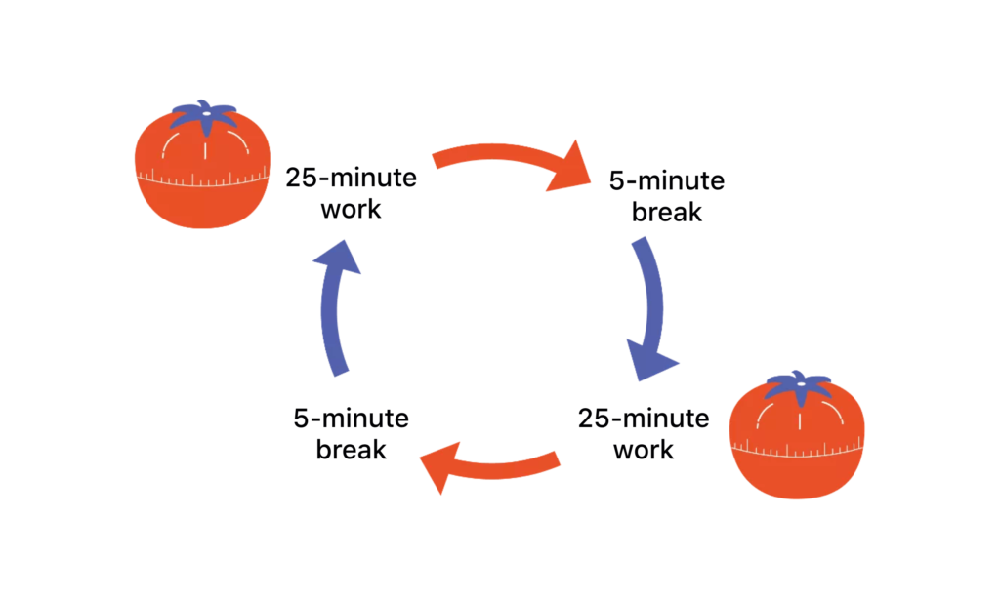

Welcome to tomatofocus! The first time opening this website you see a timer with many options which is very random. This website is not just a timer website but a productivity website in which will help you to focus on tasks at hand. Down below explains everything that focuses on what the Pomodoro Timer is.
The Pomodoro Tecnhiques is a technique developed by an Italian named Francesco Cirillo. He made the Pomodoro Timer during his university years while doing his study sessions.
It is a timer that normally is made up of cycles. These cycles are composed of 25 minutes of focus and 5-10 minutes of a break. Francisco named this timer the Pomodoro timer which is literally translated to the 'Tomato Timer'. The reason behind is because when Francisco was in university he would often use a tomato timer to set up his timed study sessions.
The Pomodoro Timer is scientifically backed up. Through research many scientists, with great interest of the technique, concluded that most people have the focus span that lasts around 25 Minutes. This means that during the 25 Minutes, a task set by a person should be completed right when the timer ends. The short break is a way to make most people get used to the delayed gratification causing less procrastination.
This website is very easy to use. The Pomodoro/Short Break Timer has three buttons (Stop, Start, and Reset), each having their own functions. The stop button pauses the timer, the start button starting the timer, and the reset button resetting the timer. Once you have completed one Pomodoro you press the Short Break button which will show you the Short break timer and start that timer. Once that timer is done, you have completed a cycle, press the Pomodoro button and start the cycle once again.